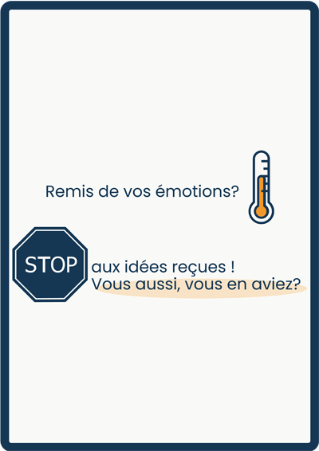
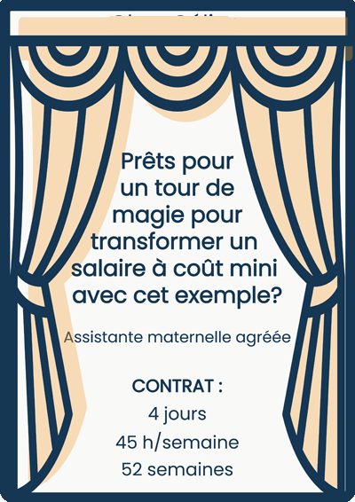
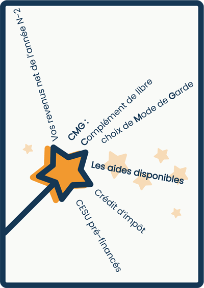

LA PHASE DU « POURQUOI ? »
Ne concerne pas que les enfants ...
En tant que parents, vous connaissez tous cette phase des « pourquoi ? » du « combien ? » et « comment ? » lorsqu'il s'agit de gérer la relation contractuelle avec une assistante maternelle agréée. Salaire ne rime pas avec galère ! Fini le surmenage émotionnel. Pour vous aider à vivre cette aventure sereinement, j'ai préparé cette FAQ qui répondra à toutes vos questions:
Il était une fois, quatre émotions qui vivaient de grandes aventures ...
-

-
QU'EST CE QUE LA CONVENTION COLLECTIVE ?
Depuis le 1er janvier 2022, le secteur des particuliers employeurs et de l’emploi à domicile est régi par une nouvelle convention collective unique. Ce cadre juridique modernisé assure une relation d'emploi sereine durant la relation contractuelle.
Retrouvez la convention collective sur le site Légifrance en cliquant sur l'icône. Téléchargez la C.C.N en PDF et faites vos recherches rapides avec l'outil ChatPDF.
-
LEGISLATION APPLICABLE
Le contrat de travail des assistantes maternelles est encadré par une hiérarchie de textes : le Code du travail fixe le cadre général, le CASF s'applique spécifiquement à la profession, puis vient la Convention Collective Nationale (CCN), et enfin les clauses spécifiques du contrat, qui prévalent sur tout le reste dans les limites de la loi.
La C.C.N:
Convention collective du secteur des particuliers employeurs et de l’emploi à domicile, (en vigueur depuis le 1er janvier 2022).
Code CASF:
Code de l’action sociale et des familles. Articles L.423-1 et suivants, D.423-5 et suivants.
Le Code du travail:
Pour certains articles listés à l’article L.423-2 du CASF. articles sur la maternité L.1225-1, congés payés L.3141-3, événements familiaux L.3142-1, paiement du salaire L.3241-1, et mensualisation L.3242-1.
Code de la sécurité sociale:
Articles sur les accidents du travail et maladies professionnelles L.411-1, L.461-1 à 8, R.461-1. Les articles du Code du travail sur la durée du travail, le temps partiel, l’entretien préalable et la cause réelle et sérieuse pour un licenciement (retrait d’enfant) ne s’appliquent pas.
-
LES AIDES
• Les prestations de la PAJE et le complément de libre choix du mode de garde (CMG) : Ces aides sont versées par la CAF pour réduire le coût de la garde.
• Le crédit d’impôt : Vous pouvez bénéficier d'un crédit d'impôt pour les frais de garde d'enfants de moins de 6 ans.
• Le CESU préfinancé : Les chèques CESU préfinancés peuvent être partiellement ou totalement financés par plusieurs entités, telles que l'entreprise des parents, le comité d'entreprise (CE), des organismes publics (comme les conseils généraux, régions ou municipalités), ou les parents eux-mêmes. Ils permettent de réduire les frais de garde en étant utilisés directement pour payer l’assistante maternelle agréée.
Autres bons plans :
• Les aides de votre région ou de votre département.
• Les aides de certaines municipalités.
• Si vous travaillez dans la fonction publique et dans le cas où vous ne dépassez pas un certain plafond de salaire, vous pouvez bénéficier des chèques « C.E.S.U. fonction publique » (entre 220 à 655€ annuels).
Fonctionnement des aides :
En crèche, les aides sont déduites du montant total, vous laissant le solde à payer. Avec une assistante maternelle agréée, vous payez le salaire NET, puis déduisez vos aides (CMG, CESU préfinancés, et crédit d'impôt) pour déterminer votre reste à charge.
Pour vous aider à comprendre ces coûts, je vous fournirai un tableau de mensualisation lors de notre rendez-vous de signature. Ce tableau vous donnera une vision claire des montants à prévoir et de votre budget final.
-
DEMARCHES A EFFECTUER
 Réserver ma place.
Réserver ma place.
Rédigez un engagement réciproque, qui est un accord écrit entre vous et l'assistante maternelle. Cet accord assure à la famille une place réservée pour la période de son choix. En contrepartie, l'assistante maternelle s'engage à arrêter ses recherches et à bloquer la place.
Faire mes démarches pour le Cmg.
La demande de CMG (Complément de libre choix du mode de garde) doit être effectuée quelques mois avant l’embauche d’un salarié ou le recours à une structure. Pour faire une demande, rendez-vous sur caf.fr. La CAF déclarera ensuite l’emploi de l'assistante maternelle au centre national Pajemploi. Vous recevrez un identifiant par courrier pour vous connecter à Pajemploi.
Signer le contrat de travail.
Le contrat de travail doit être signé au plus tard le jour de l’embauche. Il doit être rédigé par écrit et signé en deux exemplaires, un pour chaque partie, afin de formaliser l'accueil.
Déclaration à PAJEMPLOI.
Avec le code employeur fourni après votre demande de CMG, vous pourrez déclarer le salaire de l'assistante maternelle à l'URSSAF sur Pajemploi à la fin de chaque mois. Cela permettra le versement de votre prestation CMG.
La fin de contrat.
Que ce soit à l'initiative du parent ou de l'assistante maternelle, la lettre de fin de contrat doit être adressée par courrier recommandé avec accusé de réception ou remise en main propre contre décharge.
Les documents administratifs.
À la fin du contrat, qu'il s'agisse d'une démission ou d'un retrait de l'enfant par le parent, les documents suivants devront être remis :
• Une attestation France Travail
• Un certificat de travail
• Un solde de tout compte
Les trois documents doivent être remis le dernier jour de préavis. Si l'assistante maternelle ne réalise pas totalement le préavis à sa demande, l'employeur dispose de deux semaines après la fin du contrat pour les remettre. Un dernier bulletin de salaire, incluant toutes les sommes versées lors de la rupture du contrat, doit être édité par l'URSSAF - Pajemploi. La déclaration doit être faite entre le 25 du mois d'emploi et le 5 du mois suivant, en respectant la date limite de paiement stipulée dans le contrat.
-
LES SITES UTILES
-
COÛT D'UNE PLACE
Déterminez votre montant du CMG.
Pour commencer, déterminez votre montant du Complément de libre choix du Mode de Garde (CMG) en fonction de vos ressources sur le site service-public.fr
Ensuite consultez: " Quel est le montant du complément de libre choix du mode de garde? "
Un taux horaire validé par la CAF.
La CAF fixe un taux horaire plafond en fonction de votre besoin d'accueil. Ce plafond est conçu pour être juste et cohérent, aligné avec les autres modes d'accueil. Je respecte ce plafond journalier fixé par la CAF ; mon barème tarifaire est calculé en fonction de ce plafond et de vos besoins, garantissant ainsi un équilibre entre un salaire décent pour l'assistante maternelle et l'éligibilité à l'aide CMG pour le parent. L'objectif est que ni l'assistante maternelle ni le parent ne soient lésés.
Le coût réel par heure.
Le taux horaire sert uniquement à calculer le salaire de l'assistante maternelle. Il ne doit pas être confondu avec le coût réel par heure, qui est important et intéressant à connaître pour vous. Vous constaterez que ce coût réel est comparable à celui des crèches et peut également se rapprocher de celui d'une personne non déclarée.
Le reste à charge.
Le salaire net de l'assistante maternelle ne correspond pas à votre reste à charge. Pour déterminer ce reste à charge, vous devez déduire du salaire net le montant du CMG (Complément de libre choix du Mode de Garde), le crédit d'impôt, ainsi que le montant des CESU préfinancés, si vous y avez droit.
L'indémnité d'entretien.
Le montant minimum légal de l'indemnité d'entretien est calculé en fonction de l'amplitude horaire la plus importante. Pour obtenir ce montant, renseignez les informations concernant vos besoins d'accueil sur le site service-public.fr . Comme le minimum légal peut augmenter régulièrement, j'ajoute 60 centimes pour garantir un montant stable tout au long de la durée du contrat.
L'indémnité de repas.
Mon indemnité de repas est calculée en fonction de l'âge de l'enfant et de l'inflation, en me basant sur le montant en vigueur au 1er janvier, tel qu'indiqué sur le site pajemploi.urssaf.fr Vous trouverez cette information dans la rubrique « Les prestations en nature ». Vous avez la possibilité de fournir le repas ; rien n'est imposé.
-
QU'EST-CE QUE LE "PLAFOND CAF" QUAND JE DEMANDE LE TARIF ?
C'est le plafond journalier de référence à ne pas dépasser
Percevoir le tarif maximum du "plafond CAF" peut parfois être mal perçu par certains parents, car cela peut sembler une volonté de maximiser les revenus au détriment de leur budget et de l'accueil. Cependant, il est important de noter que ce tarif est une limite légale à respecter pour bénéficier des aides de la CAF.
Étant donné que ce plafond varie selon les besoins d'accueil et n'est pas un tarif fixe, il est impossible de donner un tarif immédiat. Les parents doivent également être conscients que dépasser ce plafond peut entraîner des coûts supplémentaires, car les charges sociales ne seront pas couvertes par la CAF.
En 2024, le "plafond CAF" est fixé à 58,25 € bruts par jour (45,50 € nets, ou 44,75 € en Alsace-Moselle).
Pourquoi j'applique le plafond CAF :
• Contrairement à un salarié en structure, en tant qu'indépendante, mon salaire varie lors des périodes creuses, ce qui peut affecter ma stabilité financière.
• En appliquant le tarif maximum autorisé, je peux couvrir mes charges, maintenir un niveau de vie stable, et offrir une qualité d'accueil, même lorsque la demande est plus faible.
• Ce tarif plafond me permet également de répondre aux besoins des débuts de contrats en cours d'année sans imposer un début en septembre.
• Ce plafond est aligné sur un reste à charge similaire à celui en crèche, ce qui en fait un revenu juste et éthique.
-
OUI, UN SALAIRE AU PLAFOND CAF À COÛT MINI, C'EST POSSIBLE! EXPLICATIONS
aux idées reçues!
COMPARAISON TRANSPARENTE:
Ne vous laissez pas tromper par les arguments marketing qui présument qu'une assistante maternelle est toujours plus chère qu'une place en crèche. Bien que cela puisse parfois être vrai, l'accueil personnalisé d'une assistante maternelle peut justifier ce coût, et elle peut même être financièrement avantageuse dans certaines situations. Consultez la simulation détaillée en PDF pour comparer le coût réel par heure et le reste à charge entre une assistante maternelle et une crèche. Utilisez également les outils en ligne pour faire une simulation et prendre une décision éclairée.
 Les calculs détaillés demandent plus d'attention qu'un simulateur en ligne, mais ils sont cruciaux pour faire un choix éclairé et comprendre pourquoi les services d'une assistante maternelle peuvent être financièrement avantageux.
DETAILS DU CONTRAT:
• Accueil sur 4 jours: hors mercredis
• Amplitude de 07h45 à 18h45: 45h/semaine et 195h mensualisées
• Contrat sur 52 semaines: 5 semaines de congés payés obligatoires en commun
TARIFS:
• Taux horaire 4,20€ net
• Indemnité entretien 5,0325€/journée d'accueil: 946€ annuel pour 188 jours d'accueil
SALAIRE DE L'ASSISTANTE MATERNELLE:
• Salaire mensuel: 818,03€ net.
• Salaire annuel: 9 816,36€ net.
LES AIDES DISPONIBLES:
• CMG (Complément de libre choix de Mode de Garde): 200,22€ mensuel (2 402,64€ annuel).
• Crédit d'impôt: 145,83€ mensuel (1 750€ annuel).
INDEMNITE D'ENTRETIEN:
• Montant forfaitaire annuel du crédit d'impôt de l'IE: 498,20€ (2,65€/jour pour 188 jours)
• Part mensuelle non prise en charge: 946€ - 498,20€ = 447,80€/12 mois = 37,32€
RESTE À CHARGE POUR LES PARENTS:
• Reste à charge annuel après impôt: 9 816,36€ net - 2 402,64€ + 498,20€ - 1 750€ = 6 161,92€
• Reste à charge mensuel: 6 161,92€ / 12 mois = 513,49€ + 37,32€ = 550,82€
COÛT RÉEL PAR HEURE:
Pour un taux horaire de 4,20€ et un salaire mensuel de 818,03€, le coût réel par heure varie selon le revenu des parents.
• Revenus supérieurs: reste à charge de 550,82€/mois maximum => coût réel par heure = 2,82€.
• Revenus moyens: reste à charge de 417,29€/mois maximum => coût réel par heure = 2,14€.
• Revenus inférieurs: reste à charge de 221,76€/mois maximum => coût réel par heure = 1,13€.
IMPACT DES CESU PRÉ-FINANCÉS:
Avec un CESU pré-financé de 125€/mois:
Reste à charge mensuel pour les revenus inférieurs: 221,76€ - 125€ = 96,76€.
• Coût réel par heure: 0,49€.
• Coût réel de la crèche collective: ici la simulation en PDF
À RETENIR:
Pour un taux horaire de 4,20€ net et un salaire de 818,03€ net, le coût réel par heure peut être aussi bas que 0,49€ grâce aux aides et aux CESU pré-financés.
SIMULATION DU CAS CONCRET POUR LA CRECHE:
Pour simuler le coût de la crèche collective selon votre tranche de revenu, visitez monenfant.fr.
Exemple pour des revenus supérieurs:
• Crèche collective : 553,23€/mois.
• Assistante maternelle : 550,82€/mois.
Consultez la simulation détaillée en PDF
-
COMMENT PUIS-JE REGLER LE SALAIRE ?
Par virement bancaire :
Le règlement s'effectue par virement bancaire. Je vous transmettrai un RIB pour procéder au paiement.
Par CESU :
Je n'accepte que les Chèques Emploi Service Universel (CESU) préfinancés dématérialisés. Je vous fournirai mon numéro d'affiliation nationale (NAN), nécessaire pour le virement en ligne.
Date de paiement :
Je propose de régler le salaire le 5 de chaque mois. Cependant, nous pouvons convenir d'une autre date si nécessaire. L'essentiel est de respecter la date de paiement mentionnée dans le contrat pour éviter tout retard.
Des difficultés de paiement ?
Un contrat est un engagement mutuel. En cas de non-paiement ou d'accumulation de dettes, cela peut entraîner la rupture du contrat et l'arrêt de l'accueil de votre enfant. La situation pourra nécessiter une action en justice pour résilier le contrat à vos torts exclusifs, en saisissant le Conseil des Prud'hommes, plutôt qu'une démission de ma part. Cette option pourrait entraîner des intérêts de retard ainsi que des dommages et intérêts à votre charge.
-
GUIDE POUR REMPLIR L'ATTESTATION EMPLOYEUR
Pour créer un "espace employeur" sur le site de France Travail utilisez votre identifiant URSSAF (Pajemploi), que vous pouvez trouver dans votre lettre de bienvenue, votre espace personnel en ligne, vos e-mails de confirmation, ou en contactant le service client de Pajemploi ou de l'URSSAF. Vous recevrez ensuite un code d'accès par e-mail. Je vous fournirai une saisie personnalisée pour vous guider.
Les étapes à suivre:
1. Employeur
Les informations sont préremplies selon votre inscription.
2. Salarié
Renseignez les coordonnées, le numéro de Sécurité Sociale, et l'organisme de retraite (IRCEM).
3. Emploi
Indiquez la durée de l'emploi, le dernier poste occupé, les détails du préavis, et les heures de travail hebdomadaires.
4. Motif de la rupture
Sélectionnez le motif, généralement "Retrait de l'enfant".
5. Salaires des 25 derniers mois
Indiquez les salaires bruts de chaque mois en utilisant les fiches de paie de Pajemploi. Ajustez pour 37 mois si la salariée a plus de 53 ans.
 Période de paie : Par exemple, de la date d'embauche 07/10/2019 au 31/10/2019, puis du 01/11/2019 au 30/11/2019, puis du 01/08/2022 au 27/08/2022 pour le mois du dernier jour travaillé.
Temps de travail payé : Additionnez les heures normales et majorées si applicable.
Jours non payés : Soustrayez les jours d'activité des jours calendaires du mois (ex : 31 jours - 17 jours d'activité = 14 jours non payés).
Salaire mensuel brut : Consultez la colonne "base" du bulletin de paie Pajemploi (ne pas saisir les montants des deux premières lignes CSG).
Période de paie : Par exemple, de la date d'embauche 07/10/2019 au 31/10/2019, puis du 01/11/2019 au 30/11/2019, puis du 01/08/2022 au 27/08/2022 pour le mois du dernier jour travaillé.
Temps de travail payé : Additionnez les heures normales et majorées si applicable.
Jours non payés : Soustrayez les jours d'activité des jours calendaires du mois (ex : 31 jours - 17 jours d'activité = 14 jours non payés).
Salaire mensuel brut : Consultez la colonne "base" du bulletin de paie Pajemploi (ne pas saisir les montants des deux premières lignes CSG).6. Primes
Mentionnez toute prime exceptionnelle en argent (comme une prime de Noël).
7. Sommes versées à la rupture
Incluez les indemnités de congés payés non pris et autres indemnités liées à la rupture.
8. Authentification
Inscrivez votre nom en tant qu'employeur, précisez la cause de la rupture ("Retrait d'enfant"), et signez l'attestation.
Validez en ligne et remettez une copie imprimée et signée à l'assistante maternelle.